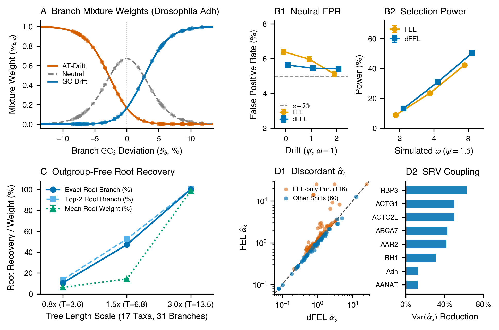
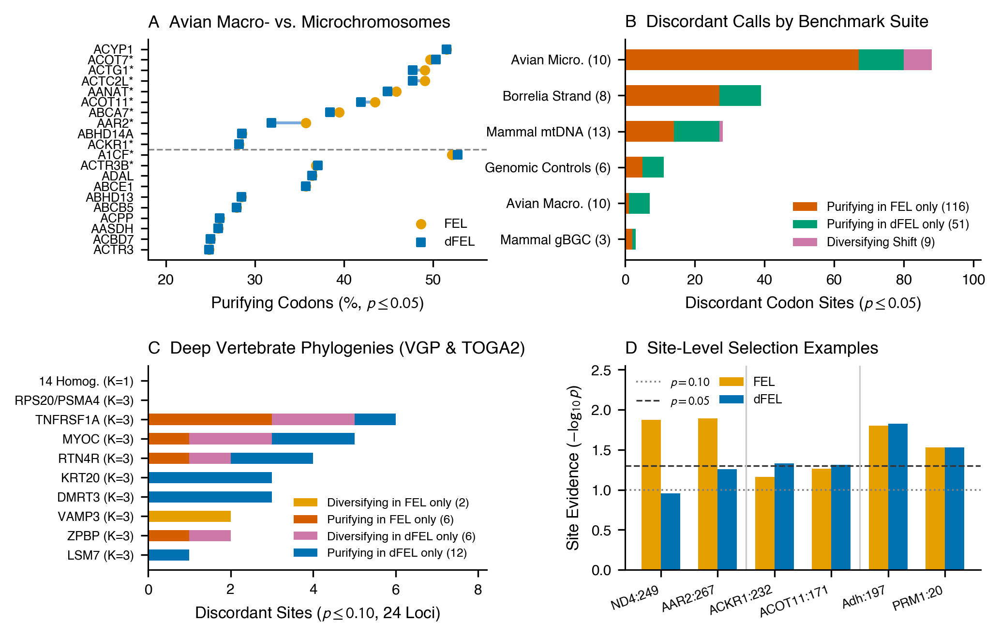

When nucleotide composition shifts across a tree, standard codon models misread directional mutational tides at 1–4% of sites—manufacturing false purifying selection and hiding adaptive evolution.
Directional FEL (dFEL) fixes both failure modes and roots the tree from coding sequences alone at virtually zero extra computational cost, making it a drop-in upgrade for genome-wide selection scans.
Muse–Gaut rates and site-level $\alpha_s$ absorb most compositional drift, but fail at 1–4% of codons—creating false purifying calls or masking adaptation.
Instead of re-diagonalizing on every branch, dFEL mixes three reversible transition matrices (AT, Neutral, GC) smoothly via branch $\text{GC}_3$ weights.
Across 87 empirical alignments, dFEL cuts across-site synonymous rate variance by 12.5–62.6%, tempers gBGC false positives, and unmasks adaptation.
Because branch mixtures break time-reversibility, dFEL recovers the root directly from coding sequences (up to 100% accuracy in simulations).
Every time we run a standard $dN/dS$ scan to find sites under purifying or diversifying selection, we make a quiet pact with Felsenstein’s pulley principle: we assume that nucleotide composition is at stationary equilibrium across the entire phylogenetic tree. Biology breaks this pact constantly—through GC-biased gene conversion (gBGC) on avian microchromosomes and mammalian recombination hotspots, asymmetric strand replication in mitochondria and bacteria, and host APOBEC/ADAR deaminases in viruses.
I have wondered for a long time how badly these compositional tides distort site-level selection tests like Fixed Effects Likelihood (FEL), and how to fix them without grinding inference to a halt on large trees.
Our new method, Directional Fixed Effects Likelihood (dFEL) (preprint on bioRxiv, implemented in C++20 in hyphy-3), gives site-level codon models a sense of direction.
Let’s start with a surprise: if you compare standard FEL against a directional model across empirical alignments—from Drosophila Adh and avian microchromosomes to 869-species vertebrate alignments—the two methods agree on 96% to 99% of all codon sites.
Why is standard FEL so resilient when stationarity is violated?
First, its Muse–Gaut rate matrix scales substitutions only by the single target nucleotide frequency ($\text{F3}\times 4$), so a clade-wide push toward GC scales synonymous and non-synonymous rates toward G or C equally.
Second, FEL estimates a free synonymous rate $\alpha_s$ at every site, which acts as a shock absorber for tree-wide average drift.
At the remaining 1–4% of "boundary" codons, however, that shock absorber bottoms out in two opposite ways (say, inside a GC-enriching clade):
- The false purifying trap (riding the tide): A conserved site enters the clade carrying an A or T at the third position. As the compositional tide rapidly flips that silent site to G or C, stationary
FELsees a flurry of silent changes, inflates $\hat{\alpha}_s \gg 1$, and calls spurious purifying selection ($\hat{\beta}_s / \hat{\alpha}_s \ll 1$). - The masked adaptation trap (swimming against the tide): A site enters already carrying G or C at the third position, suppressing silent turnover ($\hat{\alpha}_s \ll 1$). When positive selection drives adaptive amino acid replacements that require $\text{GC} \to \text{AT}$ changes against the tide, a stationary model underestimates how hard those changes were and misses the adaptation signal.
Worse, splitting conserved sites into "rapid silent turnover" and "silent stasis" artificially blows up gene-wide Synonymous Rate Variation (SRV).
How do we fix this without diagonalizing a non-reversible $61 \times 61$ codon matrix on all 1,600 branches of an 800-species tree?
First, dFEL runs a fast Pearson $\chi^2$ nucleotide homogeneity test across taxa.
If composition is stationary ($p \ge 0.05$), dFEL sets $K=1$ and reduces identically to standard FEL.
When composition varies ($p < 0.05$), dFEL activates three reversible Muse–Gaut regimes—AT-enriching ($k=0$), Neutral ($k=1$), and GC-enriching ($k=2$)—requiring just three symmetric matrix diagonalizations per site regardless of tree size.
Instead of mixing rate matrices, we mix the transition probability matrices $\boldsymbol{P}_s^{(k)}(t_b) = \exp(\boldsymbol{Q}_s^{(k)} t_b)$ on each branch $b$ using smooth Softmax weights driven by that branch's $\text{GC}_3$ shift:
Because different branches use different mixtures while the root sits at baseline frequencies, the pulley principle no longer holds: tree likelihood now depends on root placement, allowing dFEL (--root auto) to infer the maximum-likelihood root directly from coding sequences without an outgroup.

Across 1,800 simulated alignments and 87 empirical datasets (avian macro/microchromosomes, mitochondrial/bacterial strand-skew loci, and 464–869 species vertebrate alignments; Fig. 2), three results stand out:
- Collapsing phantom SRV: Stationary
FELestimated a higher synonymous rate at 95.7% (111/116) of the avian and asymmetry sites it alone called purifying (e.g., mammalian ND4 codon 249 dropped from $\hat{\alpha}_s = 13.89, p = 0.013$ underFELto $\hat{\alpha}_s = 0.78, p = 0.110$ underdFEL). Across strongly shifting genes,dFELcut whole-gene $\text{Var}(\hat{\alpha}_s)$ by 12.5% to 62.6% (Fig. 1D2). - Recalibrating avian gBGC and deep vertebrate scans: On avian microchromosomes,
dFELtempered 67 inflated purifying calls while unmasking 4 positively selected sites (ABCA7, ACKR1, ACOT11). On deep vertebrate trees, it filtered neutral GC-driven parallelisms (such as 15 recurrent $\text{ATT/ATC} \to \text{GTT/GTC}$ shifts at VAMP3 codon 94) while unmaskingMEME-corroborated adaptation (MYOC codon 15). - Outgroup-free rooting: From coding sequences alone,
dFELrooted Drosophila Adh on D. picticornis, mammalian mtDNA on the platypus, bacterial rpoB on Candidatus Borrelia tachyglossi, and deep placental/marsupial alignments on Afrotheria.

Next up for HyPhy: adding a second tilt axis ($\psi_{\text{GT}}$) for within-class purine/pyrimidine strand skews, and bringing this fast three-eigendecomposition mixture into episodic branch-site tests like MEME and BUSTED, where branch-specific bursts of gBGC or APOBEC deamination hit hardest.
dFEL is available in C++20 in hyphy-3 via CLI (hyphy3 dfel) or Python (import hyphy3 as hp). Because the $\chi^2$ homogeneity gate returns standard FEL on stationary alignments, dFEL works as a drop-in replacement.